Iceborn Raider
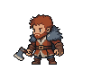
Native 112 x 88; occupied [56, 56]; 15 opaque colors; alpha [0, 255].
Actual native PNGs at 1x, then nearest-neighbour 3x. No art rescaling. Candidates need visual approval before full animation production.

Native 112 x 88; occupied [56, 56]; 15 opaque colors; alpha [0, 255].
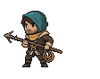
Native 112 x 88; occupied [66, 63]; 15 opaque colors; alpha [0, 255].
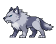
Native 112 x 88; occupied [102, 64]; 15 opaque colors; alpha [0, 255].
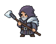
Native 112 x 88; occupied [73, 63]; 15 opaque colors; alpha [0, 255].
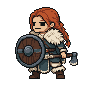
Native 112 x 88; occupied [63, 72]; 15 opaque colors; alpha [0, 255].
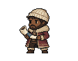
Native 112 x 88; occupied [43, 65]; 15 opaque colors; alpha [0, 255].
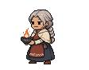
Native 112 x 88; occupied [43, 69]; 15 opaque colors; alpha [0, 255].
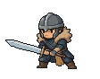
Native 112 x 88; occupied [80, 63]; 15 opaque colors; alpha [0, 255].
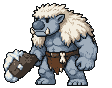
Native 112 x 88; occupied [95, 83]; 15 opaque colors; alpha [0, 255].
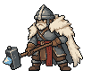
Native 112 x 88; occupied [90, 74]; 15 opaque colors; alpha [0, 255].
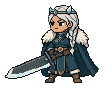
Native 112 x 88; occupied [94, 78]; 15 opaque colors; alpha [0, 255].
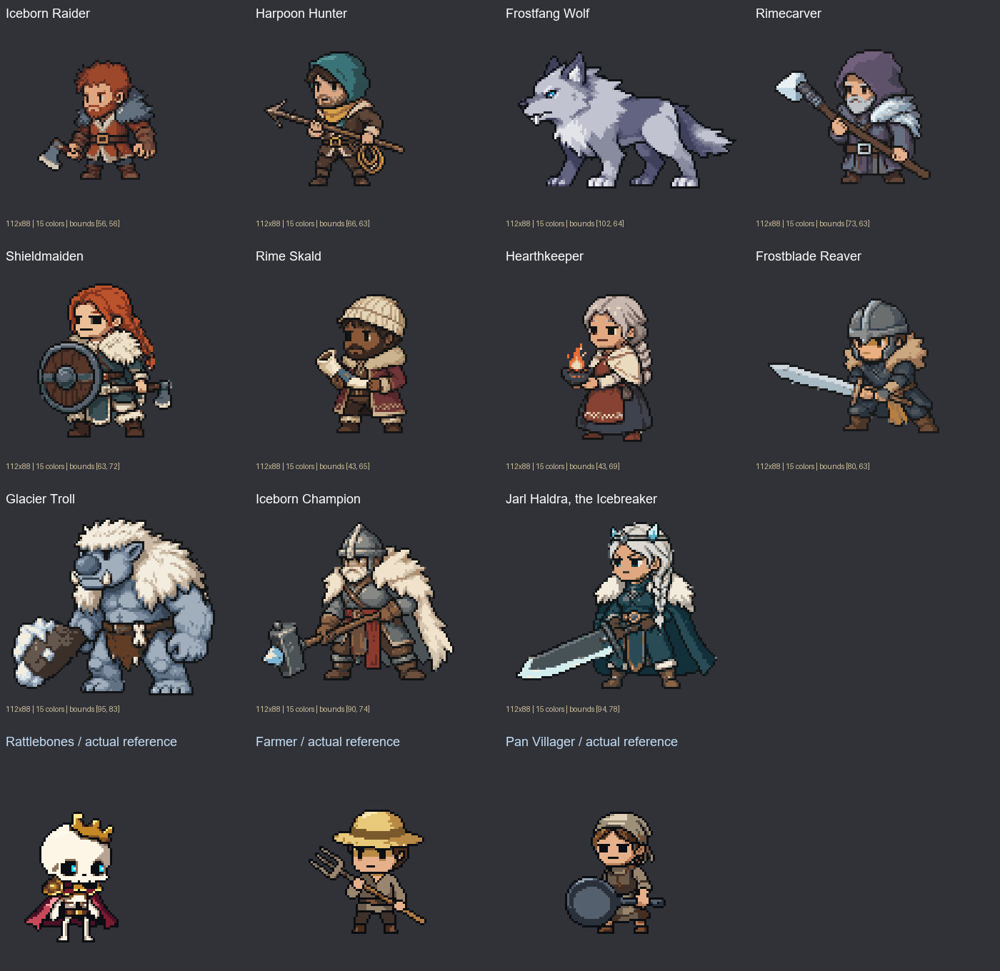
References: Rattlebones primary; Farmer and Pan supporting. Crops/transparent padding only in generation reference panels. No new golden-reference membership is implied.